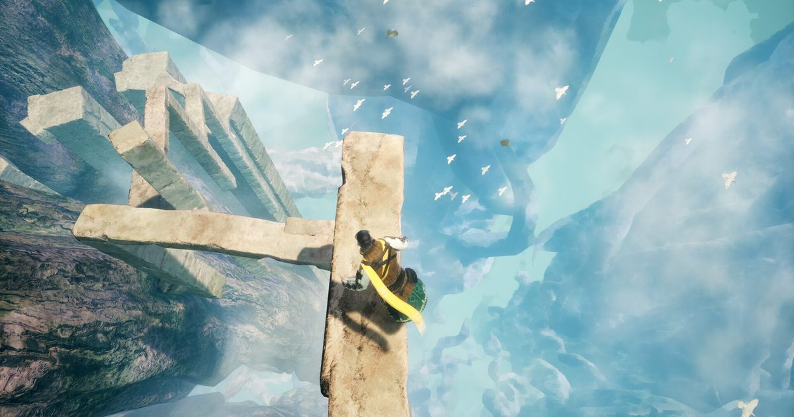

2026-11-06 · 新游深读

11 月 5 日，Cygames 全新品牌 CygamesEdge 的首作 《崩落之国（崩落の国 / Where the Seeds Fall）》悄悄上架 PS5 / Nintendo Switch 2 / Steam，纯数字下载版， 1100 日元（美元区 9.99 美元，新台币 198 元）。 同一天放出了体验版，主线约 3 小时，游戏本体只占 5 GB。
把这家公司的名字念一遍你就知道这事有多反常：赛马娘、碧蓝幻想、影之诗—— 全是日式服务型游戏的印钞机。现在这家公司突然说： 我们开个新品牌，口号叫「Stay on the edge」，做「小规模但尖的体验」， 第一款作品，三个小时，不抽卡，卖一份便当的价钱。
这篇文章不打算复述官网的游戏介绍，想回答一个更值钱的问题： 一个把「留住玩家三十年」当商业模式的公司，为什么要做一个「玩完就走」的游戏？
类型标签很罕见：「戏剧性崩落动作冒险」。与 ZEREO 公司共同开发。 舞台是世界被「污秽」吞噬之后，人类逃到巨大的世界树上、在枝干上重建文明。 树上社会有三条戒律：人与人不可争斗；受污秽侵蚀者必须令其坠落；禁忌之子必须消灭。
主角是一名失去一切的士兵，某天遇到了带来崩落的「禁忌之子」少女—— 那张脸和亡女一模一样。按戒律他该拔剑，但他选择了伸手， 从此带着她一路向下，朝着几百年没人踏足过的地表降落。
两人语言不通。整个故事几乎不靠台词， 靠光、色彩、风景和角色的举止推进——官方把这种讲法写进了卖点， 而它恰好和「语言不通」的主题是同一件事，这个同构后面细说。
这两年独立游戏圈最火的动作范式是向上攀爬： 《Getting Over It》把无数主播逼到摔键盘，去年的《PEAK》让「和朋友一起爬山」成了社交货币。 攀爬游戏的恐惧来自哪？来自「会失败」——手一滑，掉回两小时前，重来。
《崩落之国》把方向转了一百八十度：你天生就在往下走，世界已经在塌了。 于是恐惧的来源变了——不是「会失败」，而是「已经失败」。 文明早就输了，戒律只是在管理失败之后的日子。你的每一步下降，都是在穿越一个已经 坠毁的秩序：被污秽侵蚀而坠落的人、必须消灭的禁忌之子、不可争斗的禁令—— 这些设定不是世界观装饰，它们全都是「往下」这个动作的阻力。
具体到手感上，制作组刻意保留了「人的重量」：高空的风会把你吹离落点， 脚下的枝干会松动，可落脚的位置少得可怜。 官方的原话是把「从高处降下的恐惧感」特意留下来，而不是用浮空跳跃把它抹掉。 试玩版甚至故意做得比本篇更难——这是很罕见的自信：宁可劝退尝鲜的人， 也要让「下降的紧张感」在试玩里成立。
而整个玩法的核心机制叫 Flower Dive（鲜花俯冲）： 跳落之前，先把手里的花蕾掷向目标位置，花在空中绽开成一朵巨大的缓冲花， 你再一头扎进去，原本致命的高度就变成了可着陆的落点。 在哪开花、什么时候跳、怎么补偿横风——安全落点从「地图给你」变成「你亲手造」。 这一步很关键：它把「躲避危险」这种被动动作，翻成了「规划路径」的主动决策。 通关之后的高难度地图和限时竞速，考的全是这套决策的精度。
还有个容易被忽略的细节：官方放出的概念图里，禁忌之子有 2 岁、4 岁、7 岁三个形态， 会随剧情推进长大，同时解锁新能力。 也就是说角色成长不是数值加点，而是「她按故事的速度在长大」—— 叙事节奏和机制解锁是同一个时间轴。这在 3 小时的体量里是完全做得到的奢侈， 放在 30 小时的游戏里反而做不到。
现在回答开头的问题。Cygames 为什么做这个？ 我们认为看错重点的人会把答案写成「大厂试水独立游戏」， 正确的读法是：这是对人才的一次对冲。
服务型游戏的组织有个天然的排异反应：所有项目最终都要回答「留存怎么做」「付费点在哪」。 一个想做三小时紧凑体验的设计师，在这类公司里要么被改造成做活动运营， 要么走人。CygamesEdge 的品牌定位——「让中小规模团队保有创造性自由」—— 本质上是在公司内部修了一条泄洪道：留住那些想「做尖东西」的人， 而不是逼他们去别的公司或独立出去。第一款作品选一个机制导向、叙事克制、 与自家任何 IP 都无关的原创题材，是在给这条泄洪道做示范。
定价同样是在说话。1100 日元买 3 小时，折算时薪和一场电影差不多； 而同期 3A 的行情是 70 美元换 30 小时，其中还可能塞满引导和填料。 通关后的内容只有高难度图和竞速，没有每日任务，没有签到， 没有任何「明天再回来一次」的钩子—— 它的商业设计和它的叙事主题是同一个态度：往下走，走完，落地。 在一个所有游戏都拼命让你别走的行业里，做一个「玩完就放你走」的游戏， 这件事本身比游戏更好看。
排期也是故意的。本作 11 月 5 日无预热上架，两天后（11/6）Switch 2 上线的是 时之笛重制这个级别的流量怪物，月底还有主机版 GTA6 吸走全部行业目光。 CygamesEdge 完全没有参与眼球竞争——它用价格（十分之一）和时长（十分之一） 把自己定位成大作之间的一道清口小菜。 这种「不打首日战」的发行姿势，在日本大厂里非常少见。
我们的评分：8.0 / 10（发售首日，未通关，凭试玩版与完整资料评估；通关后可能上调或下调）。
我们的观察： ① 官方把「主线约 3 小时」直接写进卖点，而不是藏起来——日本大厂第一次这么坦然地卖「短」； ② 试玩版比正篇难，反过来说明他们清楚自己的正篇难度曲线是精心排过的，怕试玩误导，干脆做硬一点让你体验机制本身； ③ 品牌口号「Stay on the edge」里的 edge，既是锐气也是悬崖——和游戏的下降题材撞了个正着，不像巧合。
我们的观点： 最锋利的一条是：这个游戏把「坠落」从惩罚改成了叙事本身。 在其他游戏里，掉下去 = 读档；在这里，掉下去 = 前进。 当一个品类的核心恐惧（高度）被原样保留、而它的语义（失败）被整个翻转时， 机制和故事就咬合在一起了——这是独立游戏级别的咬合度，出现在一个手游巨头的子品牌首作里。
我们的案例对比： 和《PEAK》比，两者都拿恐惧当核心体验，但《PEAK》的恐惧靠「社交场合下的出丑」放大， 本作的恐惧靠「不可逆的世界状态」放大，单机玩家也能吃到完整的紧张感； 和《Inside》比，两者都是「无声的两人 + 环境叙事 + 3–4 小时」， 但《Inside》的机制服务氛围，本作的氛围服务机制——Flower Dive 是先有的玩法假设； 和 Cygames 自家的《碧蓝幻想 Relink》比，那是在既有 IP 上做大做满， 这个是从零开始做小做尖——两条产品线的方向完全相反，这正是开设子品牌的意义。
我们的实验（留给读者的）： 如果你也买了，建议记录两个数字：通关用时，以及通关后多少天没有再打开它。 如果后者超过两周，说明它的「玩完就放你走」设计成立—— 这不是缺点，是它和手游时代最大的区别。我们会在通关后把数据补进这篇的评论区。
这条新闻最容易被写成「Cygames 出了一款小游戏」。 但值得记住的是三件更具体的事： 一个做长线服务的公司，给自己的员工修了一条不做长线的泄洪道； 一个全民「向上爬」的年代，有人证明了往下走同样能撑起一整款游戏； 以及一个 1100 日元、3 小时、5 GB 的产品，敢和时之笛重制、GTA6 同月上架，安静得像一种宣言。
士兵和禁忌之子往下走，是因为地表是唯一的答案。 CygamesEdge 往下走，是因为大厂的天花板上面已经没有空间了。 两段旅程用的居然是同一个动词。等我们通关，回来告诉你落点稳不稳。